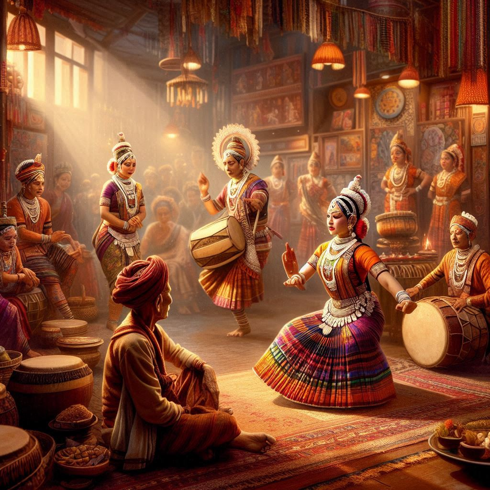
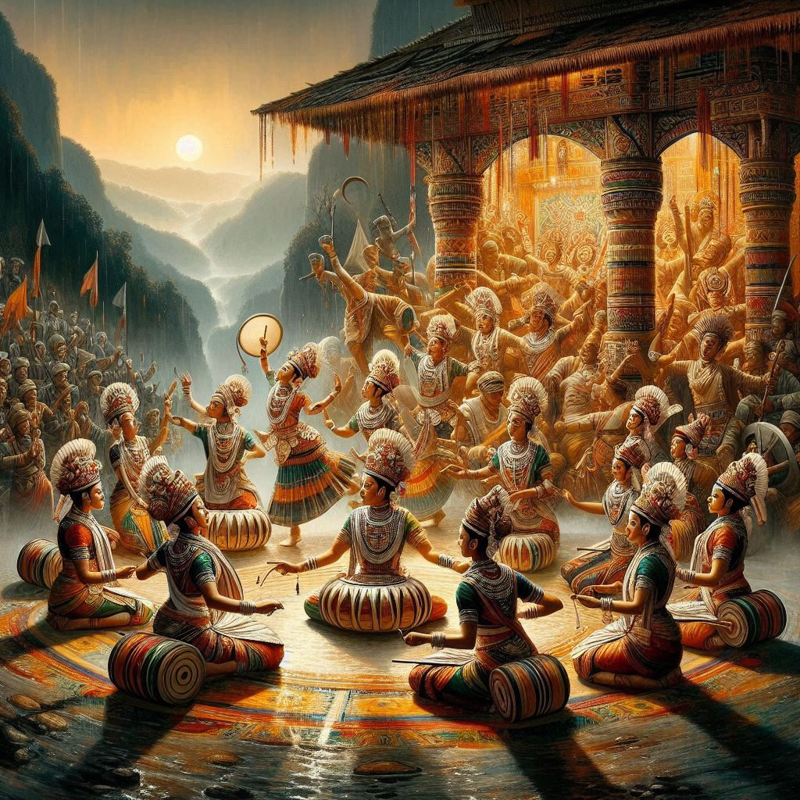

Manipur, located in the northeastern region of India, has a rich and unique cultural heritage that blends traditional practices with influences from neighboring regions. The state's culture is characterized by its distinct dance forms, music, arts, festivals, and social customs. Below is an overview of the key aspects of Manipur’s culture.
1. Dance and Music
Manipur is internationally renowned for its classical dance form known as Manipuri dance, which is one of the eight classical dance forms of India. It is characterized by graceful movements, intricate footwork, and devotional themes, often based on the divine love story of Radha and Krishna.
Rasa Lila: The most famous form of Manipuri dance, Rasa Lila, is a classical dance-drama that narrates the love story of Lord Krishna and Radha, and is performed during festivals like Rath Yatra and Holi.
Pung Cholom: This is a traditional drumming dance performed by men, where they dance while balancing a pung (drum) on their bodies. It is performed during major festivals and celebrations.
Thang Ta: A martial art dance form of Manipur, Thang Ta involves the use of swords and spears in choreographed movements that also narrate stories from Manipuri history and mythology.
The music of Manipur is also deeply intertwined with its dance forms. Pung (drum), Dhol, and Sana (flute) are some traditional instruments used during performances.
2. Art and Craft
Manipur has a rich tradition of arts and crafts, showcasing the skill and creativity of its people.
Handloom and Weaving: The state is famous for its intricate handwoven textiles. Manipuri silk, particularly Phanek, a traditional wraparound skirt worn by women, and Innaphi, a shawl worn by women, are highly valued.
Pottery and Bamboo Crafts: Manipur also has a strong tradition of pottery and bamboo crafts, which are used for both functional and decorative purposes. Products like bamboo baskets, mats, and furniture are part of daily life.
Sculpture and Paintings: Traditional Manipuri paintings, such as the Panchaloha sculptures (a blend of five metals), depict religious deities and rituals.
3. Festivals
Manipur celebrates several festivals with great zeal and religious fervor, many of which are rooted in the traditions of the state’s diverse communities.
Yaoshang: This is the Manipuri version of Holi, celebrated with great enthusiasm, especially with dancing, music, and throwing of colors. It is one of the most important festivals in Manipur.
Ningol Chakouba: A major social festival celebrated in the month of November, this festival is marked by a grand feast and involves the reunion of married women with their parental homes.
Lai Haraoba: This is a ritualistic festival celebrated by the Meitei community to honor the local deities and spirits. It includes dance performances, music, and traditional rituals.
Rath Yatra: Like other parts of India, the Manipuri version of the Rath Yatra, celebrating Lord Jagannath, is an important event in the state, particularly in the capital Imphal.


4. Cuisine
Manipur’s cuisine is simple yet flavorful, using fresh ingredients and a variety of herbs and spices native to the region.
Rice is the staple food of Manipur, and it is often served with fish, meat, and vegetables. The traditional Manipuri thali includes rice, fish curry, leafy vegetables, and chutneys made from fermented fish or bamboo shoots.
Eromba: A popular dish made from mashed vegetables like potatoes and beans mixed with fermented fish, it is typically eaten with rice.
Singju: A traditional Manipuri salad made from various vegetables, herbs, and fish, often served with a tangy dressing.
Ngari: Fermented fish, a key ingredient in Manipuri cuisine, is used in various dishes like soups and chutneys.
5. Religion and Traditions
Religion plays a central role in the cultural life of Manipur, with Hinduism and indigenous beliefs coexisting.
Hinduism: The majority of Manipuris follow Hinduism, and the state has many Hindu temples and rituals. The Shree Govindajee Temple in Imphal is an important religious site.
Sanamahism: This is the indigenous faith of the Meitei people of Manipur. It focuses on the worship of nature and ancestral spirits.
Meitei Mayek: The Meitei script, which was developed to preserve the language and culture, is used for writing the Meitei language and plays an important role in maintaining the cultural identity.
6. Clothing
Traditional attire in Manipur is distinct and showcases the intricate craftsmanship of its people.
Phanek: A wraparound cloth worn by Manipuri women, which is often made of silk and woven with rich patterns.
Innaphi: A traditional shawl worn by women, draped over the shoulders and adding to the elegance of the attire.
Kilt: For men, the traditional dress consists of a cloth similar to a kilt or a long tunic.
7. Social Structure and Customs
Manipur’s social life is highly organized around family and community. In rural areas, extended families live together, and joint family systems are still common.
Marriage: Marriage in Manipur is traditionally arranged, and it involves various customs and rituals, including feasts and dance performances. Ningol Chakouba is one of the most significant occasions for socializing and celebrating family bonds.
Respect for Elders: Elders are held in high esteem in Manipuri society, and respect for them is a key aspect of social life.
8. Literature
Manipuri literature has a long history, with Meitei literature being the most prominent. It includes poetry, plays, and prose written in the Meitei language and often reflects the themes of love, religion, and war.